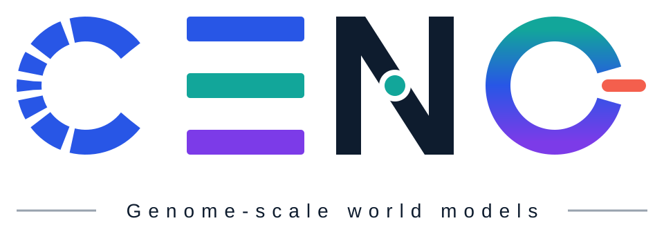
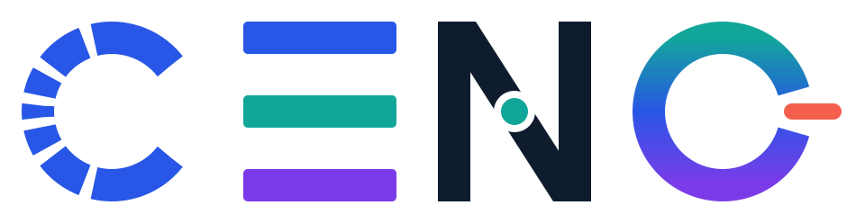
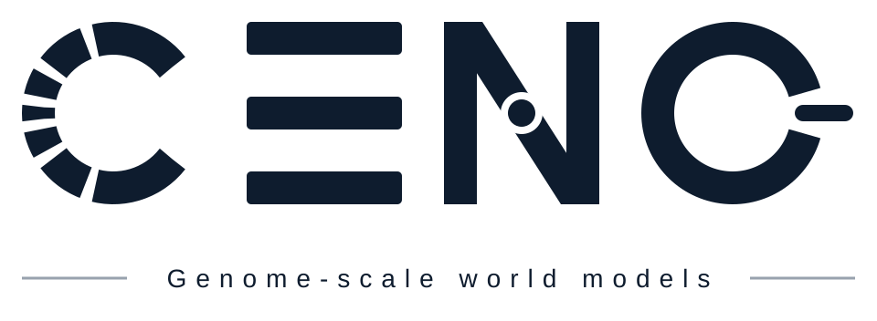
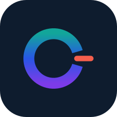
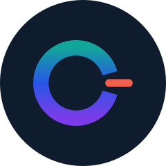
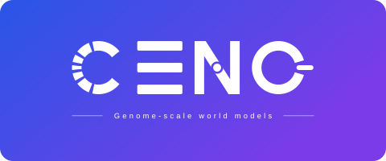
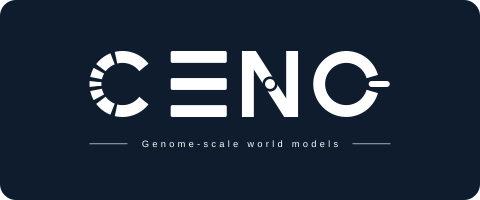
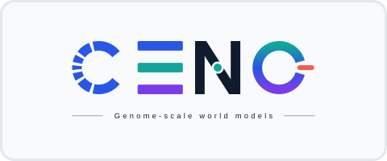
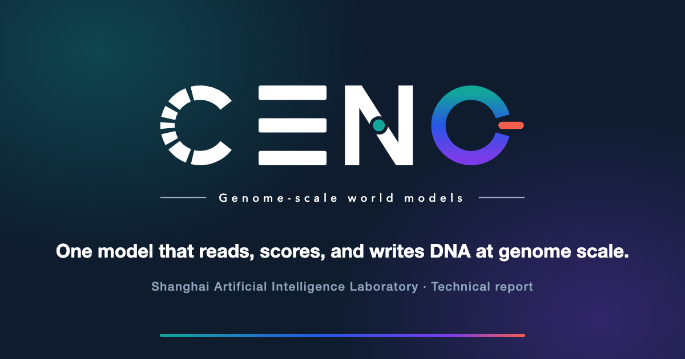

{kind=link}
{kind=link}
{kind=link}
{kind=link}
{kind=link}
{kind=link}
{kind=link}
{kind=link}
{kind=link}
{kind=link}
{kind=link}
{kind=link}
A segmented ring; the dashes shrink toward mid-left, like context resolving into focus.
Brand kit
CENO logo, marks, and palette
Every asset below is a self-contained SVG that scales losslessly and shares one letterform geometry. The wordmark encodes the model itself: context, sequence, long-range connection, and the world loop broken by an intervention.



Marks
Icon mark and tiles
The O — the world loop, broken by the coral intervention dash — stands alone as the icon. It is the favicon, the app icon, and the avatar.

favicon.svg and apple-touch-icon.png.
Download SVG

Application
Banners and the social card
The dark and light banners are the pair used in the GitHub READMEs — they swap automatically with the reader's theme. The social card is what unfurls when the project page is shared.




og:image for the project page.
Download PNG
Palette
Five colors, each with a job
The palette maps onto the model's three stages, plus the intervention that breaks the loop and the ink that carries everything else. The O ring runs teal → blue → purple, in that order, from top to bottom.
Blue
#2856E6Context / coreTeal
#12A69AEvolutionPurple
#7C3BE8DesignCoral
#F45F4DMutation / interventionNavy
#0E1C2EInk / dark surfacesThree parallel bars in blue, teal, and purple — the three stages, read in order.
A diagonal with a teal node. The gap around the node is a true mask cut-out, so it holds on any background.
An open gradient ring, broken by the coral intervention dash. This letter alone is the icon.
Usage
A few rules
- On dark surfaces use the white lockup, or swap only the navy N to light ink —
that is what this site does, via the
--brand-inkcustom property. - Keep clear space around the lockup equal to the height of the E bars.
- Never re-color the coral dash, and never close the O ring — the break carries the meaning.
- Don't stretch: the geometry is built on a 200-unit cap height and a 36-unit stroke.
- The tagline uses a geometric sans stack. For print delivery, convert it to outlines in a vector editor.
- Masters, PNG, and print-ready PDF exports all live in
CENO_logo_vector/; regenerate them withpython3 generate_logos.py.